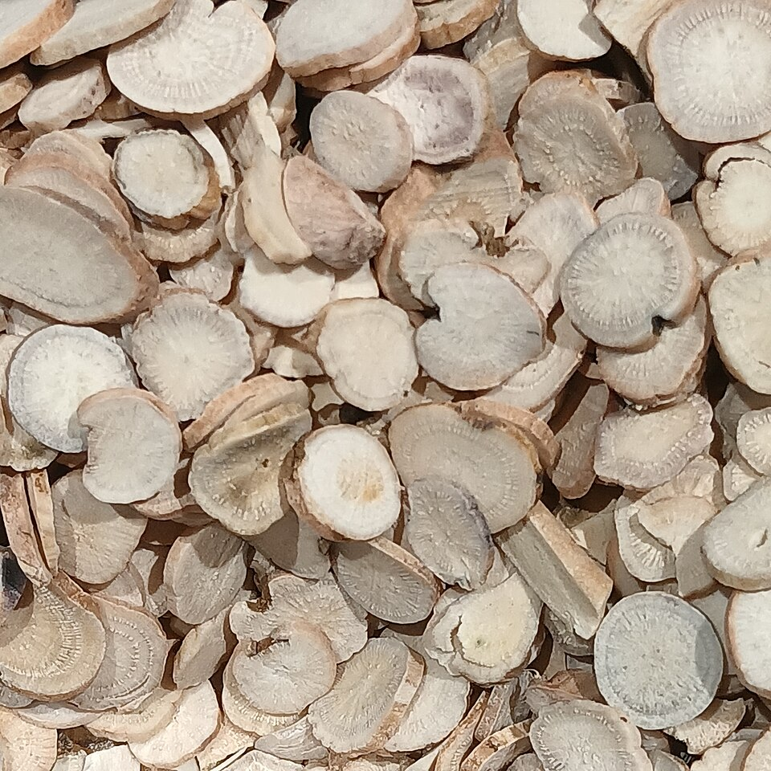

Báisháo · White peony root白芍
Paeoniae Radix Alba · Supplementing herbs: blood tonicsPaeoniae Radix Alba · 补虚药·补血药

_01.jpg){kind=link}


- Flavour · nature性味
- bitter, sour; slightly cold苦、酸，微寒
- Channels归经
- Liver, Spleen肝、脾经
- Direction升降浮沉
- Sour and astringing, bitter and lowering, mainly descending: it holds in yin fluids and softens the liver, and checks over-dispersal when paired with acrid herbs酸收苦降，沉降为主：收敛阴液、柔养肝体，与辛散药相配时防其发散太过
- Toxicity毒性
- Non-toxic无毒
- Dose (pharmacopoeia)用量（药典）
- 6–15 g (ceiling 15 g)（上限 15 克）
Decocted; raw to calm the liver and hold in yin, dry-fried or wine-fried to nourish blood and regulate menstruation煎服；平肝、敛阴多生用，养血调经多炒用或酒炒 - Pregnancy孕期
- No pregnancy restriction listed (not proof of safety)未列孕期禁忌（不等于已证明安全） No pregnancy restriction in the pharmacopoeia or textbooks (which is not proof of safety).药典与教材未列孕期禁忌（这不等于已证明孕期安全）。
- Health Canada加拿大卫生部
- Health Canada status: still to be verified加拿大卫生部状态：待核验 An NHPID monograph or ingredient entry for peony root is still to be verified.加拿大天然保健品数据库中芍药根的专论或成分条目待核验。
- Conservation资源与保护
- Cultivated (Bozhou in Anhui, Zhejiang, Sichuan); no controls.栽培品（安徽亳州、浙江、四川），无管制。
- Source来源
- Paeonia lactiflora Pall.. Dried root of the cultivated peony Paeonia lactiflora, peeled and boiled before dryingPaeonia lactiflora Pall.。毛茛科植物芍药的干燥根（栽培品，去皮煮后晒干）
Traditional actions and indications功效与主治（传统）
🏛 Traditional statements, not efficacy claims; the modern evidence is graded further down.以下为传统说法，不是疗效主张；现代证据见下文分级。
- Nourishes blood and regulates menstruation养血调经
- Preserves yin and stops sweating敛阴止汗
- Softens the liver and stops pain柔肝止痛
- Calms liver yang平抑肝阳
Sallow complexion from blood deficiency and irregular periods; spontaneous and night sweating; flank, abdominal and cramping limb pain; headache and dizziness from rising liver yang.血虚萎黄、月经不调；自汗、盗汗；胁痛、腹痛、四肢挛痛；头痛眩晕（肝阳上亢）。
How to recognise it怎么认
Growing植株 A perennial 40–70 cm tall with twice-ternate leaves and large white, pink or red flowers in early summer: the familiar garden peony. The root is thick and cylindrical.多年生草本，高 40–70 厘米；二回三出复叶；初夏开大型花，白、粉或红色，就是常见的观赏芍药。根粗壮，圆柱形。
Decoction pieces饮片 Thin round slices, whitish to pale pinkish-brown and smooth; a clear cambium ring and radiating lines on the cut face. Faint smell; slightly bitter and sour.类圆形薄片，表面类白色或淡棕红色，平滑；切面形成层环明显，有放射状纹理。气微，味微苦、酸。
Processing炮制
- Raw Bai Shao生白芍：: Calms liver yang and preserves yin偏于平抑肝阳、敛阴
- Dry-fried / wine-fried Bai Shao炒白芍、酒白芍：: Less cold; nourishes blood, regulates menstruation, softens the liver and stops pain寒性减弱，偏于养血调经、柔肝止痛
Cautions and incompatibilities使用注意与配伍禁忌
Not for yang decline with vacuity cold; not with Li Lu (the eighteen incompatibilities).阳衰虚寒之证不宜用；不宜与藜芦同用（十八反）。
- Li Lu clashes with peony root (white or red)藜芦反芍药（白芍、赤芍） eighteen incompatibilities十八反
Interactions with medicines与西药的相互作用
No reliable study of Bai Shao and drug interactions was found; paeoniflorin's antiplatelet effect is seen only in lab work and its meaning alongside anticoagulants is unknown.未查到白芍与西药相互作用的可靠研究；芍药苷的抗血小板作用只见于实验室研究，与抗凝药合用的临床意义不明。
Modern research, graded现代研究（分级）
- E4 Paeoniflorin is antispasmodic and analgesic in animal work, echoing the traditional 'relaxes cramping and stops pain' of Shao Yao Gan Cao Tang; human evidence is limited.芍药苷在动物实验中有解痉、镇痛作用，与「缓急止痛」（芍药甘草汤）的传统说法相呼应；人体证据有限。
In the classics古籍原文
「芍藥味苦。主治邪氣腹痛，除血痹，破堅積寒熱疝瘕，止痛，利小便，益氣」——神农本草经
Shennong Bencao Jing (Divine Farmer's Materia Medica)
The Shennong Bencao Jing says only 'peony', with no white/red split; separating Chi Shao and Bai Shao came after the Northern and Southern dynasties. So for Zhang Zhongjing's formulas later doctors chose white or red by the formula's intent; this site links Shanghan formulas to Bai Shao by default and says so on each formula.《神农本草经》只称「芍药」，不分赤白；赤芍、白芍分开是南北朝以后的事。所以张仲景方里的芍药，后世按方意分别用白芍或赤芍，本站伤寒方默认连到白芍并在方中注明。
Where it is used: the web串联：它在哪些方里、连到哪里
Classical formulas (Shanghan, Jingui)经方（伤寒、金匮）
| Formula方 | Role角色 | Dose: original / today剂量：原书／今用 | Partners in the formula同方配伍 |
|---|---|---|---|
| Chinese Angelica and Peony Powder当归芍药散 | Monarch君 | original text: see the Chinese original一斤 | Dāngguī (Chinese Angelica Root)当归 · Chuan Xiong (Sichuan lovage rhizome)川芎 · Fúlíng (Poria)茯苓 · Bai Zhu (white atractylodes)白术 · Ze Xie (alisma rhizome)泽泻 |
| Cinnamon Twig Decoction plus Dragon Bone and Oyster Shell桂枝加龙骨牡蛎汤 | Monarch君 | original text: see the Chinese original三两 | Guìzhī (Cassia twig)桂枝 · Long Gu (fossil bone)龙骨 · Mu Li (oyster shell)牡蛎 · Sheng Jiang (fresh ginger)生姜 · Da Zao (jujube)大枣 · Gāncǎo (Licorice root)甘草 |
| Peony and Licorice Decoction芍药甘草汤 | Monarch君 | original text: see the Chinese original四两 | Gāncǎo (Licorice root)甘草 |
| Bupleurum and Cinnamon Twig Decoction柴胡桂枝汤 | Minister臣 | original text: see the Chinese original一两半 | Cháihú (Bupleurum root)柴胡 · Guìzhī (Cassia twig)桂枝 · Huángqín (Baikal skullcap root)黄芩 · Rénshēn (Ginseng (Asian))人参 · Bànxià (Pinellia tuber)半夏 · Sheng Jiang (fresh ginger)生姜 · Da Zao (jujube)大枣 · Gāncǎo (Licorice root)甘草 |
| Tangkuei Decoction for Frigid Extremities当归四逆汤 | Minister臣 | original text: see the Chinese original三两 | Dāngguī (Chinese Angelica Root)当归 · Guìzhī (Cassia twig)桂枝 · Xìxīn (Asarum root and rhizome)细辛 · Tong Cao (rice-paper plant pith)通草 · Da Zao (jujube)大枣 · Gāncǎo (Licorice root)甘草 |
| Cinnamon Twig Decoction plus Aconite桂枝加附子汤 | Minister臣 | original text: see the Chinese original三两 | Guìzhī (Cassia twig)桂枝 · Fùzǐ (Aconite lateral root (processed))附子 · Sheng Jiang (fresh ginger)生姜 · Da Zao (jujube)大枣 · Gāncǎo (Licorice root)甘草 |
| Cinnamon Twig Decoction plus Kudzu桂枝加葛根汤 | Minister臣 | original text: see the Chinese original二两 | Gégēn (Kudzu root)葛根 · Guìzhī (Cassia twig)桂枝 · Máhuáng (Ephedra herb)麻黄 · Sheng Jiang (fresh ginger)生姜 · Da Zao (jujube)大枣 · Gāncǎo (Licorice root)甘草 |
| Cinnamon Twig, Peony and Anemarrhena Decoction桂枝芍药知母汤 | Minister臣 | original text: see the Chinese original三两 | Guìzhī (Cassia twig)桂枝 · Zhīmǔ (Anemarrhena rhizome)知母 · Máhuáng (Ephedra herb)麻黄 · Fángfēng (Saposhnikovia root)防风 · Bai Zhu (white atractylodes)白术 · Fùzǐ (Aconite lateral root (processed))附子 · Sheng Jiang (fresh ginger)生姜 · Gāncǎo (Licorice root)甘草 |
| Cinnamon Twig Decoction桂枝汤 | Minister臣 | original text: see the Chinese original三两 9 g | Guìzhī (Cassia twig)桂枝 · Sheng Jiang (fresh ginger)生姜 · Da Zao (jujube)大枣 · Gāncǎo (Licorice root)甘草 |
| Coptis and Ass-Hide Gelatin Decoction黄连阿胶汤 | Minister臣 | original text: see the Chinese original二两 | Huang Lian (coptis rhizome)黄连 · E Jiao (ass-hide gelatin)阿胶 · Huángqín (Baikal skullcap root)黄芩 · Ji Zi Huang (egg yolk)鸡子黄 |
| Astragalus and Cinnamon Twig Five-Substance Decoction黄芪桂枝五物汤 | Minister臣 | original text: see the Chinese original三两 | Huángqí (Astragalus root)黄芪 · Guìzhī (Cassia twig)桂枝 · Sheng Jiang (fresh ginger)生姜 · Da Zao (jujube)大枣 |
| Scutellaria Decoction黄芩汤 | Minister臣 | original text: see the Chinese original二两 | Huángqín (Baikal skullcap root)黄芩 · Da Zao (jujube)大枣 · Gāncǎo (Licorice root)甘草 |
| Hemp Seed Pill麻子仁丸 | Minister臣 | original text: see the Chinese original半斤 | Huo Ma Ren (hemp seed)火麻仁 · Kǔ Xìng Rén (Bitter Apricot Seed)苦杏仁 · Dàhuáng (Rhubarb root and rhizome)大黄 · Zhǐshí (Immature bitter orange)枳实 · Hou Po (magnolia bark)厚朴 |
| Frigid Extremities Powder四逆散 | Minister臣 | original text: see the Chinese original各十分 | Cháihú (Bupleurum root)柴胡 · Zhǐshí (Immature bitter orange)枳实 · Gāncǎo (Licorice root)甘草 |
| Minor Construct the Middle Decoction小建中汤 | Minister臣 | original text: see the Chinese original六两 | Jiao Yi (malt syrup)胶饴 · Guìzhī (Cassia twig)桂枝 · Sheng Jiang (fresh ginger)生姜 · Da Zao (jujube)大枣 · Gāncǎo (Licorice root)甘草 |
| Decocted Turtle Shell Pill鳖甲煎丸 | Assistant佐 | original text: see the Chinese original五分 | Bie Jia (soft-shelled turtle carapace)鳖甲 · She Gan (belamcanda rhizome)射干 · Huángqín (Baikal skullcap root)黄芩 · Cháihú (Bupleurum root)柴胡 · Shu Fu (woodlouse)鼠妇 · Gānjiāng (Dried ginger)干姜 · Dàhuáng (Rhubarb root and rhizome)大黄 · Guìzhī (Cassia twig)桂枝 · Ting Li Zi (pepperweed seed)葶苈子 · Shi Wei (pyrrosia leaf)石韦 · Hou Po (magnolia bark)厚朴 · Mǔdānpí (Moutan Bark)牡丹皮 · Qu Mai (dianthus herb)瞿麦 · Ling Xiao Hua (campsis flower)凌霄花 · Bànxià (Pinellia tuber)半夏 · Rénshēn (Ginseng (Asian))人参 · Tu Bie Chong (ground beetle)土鳖虫 · E Jiao (ass-hide gelatin)阿胶 · Lu Feng Fang (wasp nest)露蜂房 · Chi Xiao (a form of saltpetre)赤硝 · Qiang Lang (dung beetle)蜣螂 · Tao Ren (peach kernel)桃仁 |
| Major Bupleurum Decoction大柴胡汤 | Assistant佐 | original text: see the Chinese original三兩 | Cháihú (Bupleurum root)柴胡 · Huángqín (Baikal skullcap root)黄芩 · Bànxià (Pinellia tuber)半夏 · Shēng Jiāng (Fresh ginger rhizome)生姜 · Zhǐshí (Immature bitter orange)枳实 · Dà Zǎo (Jujube fruit)大枣 · Dàhuáng (Rhubarb root and rhizome)大黄 |
| Aconite Decoction附子汤 | Assistant佐 | original text: see the Chinese original三两 | Fùzǐ (Aconite lateral root (processed))附子 · Rénshēn (Ginseng (Asian))人参 · Bai Zhu (white atractylodes)白术 · Fúlíng (Poria)茯苓 |
| Kudzu Decoction葛根汤 | Assistant佐 | original text: see the Chinese original二兩 | Gégēn (Kudzu root)葛根 · Máhuáng (Ephedra herb)麻黄 · Guìzhī (Cassia twig)桂枝 · Fresh ginger rhizome (Zingiber officinale)生姜 · Gāncǎo (Licorice root)甘草 · Jujube fruit (Ziziphus jujuba)大枣 |
| Cinnamon Twig and Poria Pill桂枝茯苓丸 | Assistant佐 | original text: see the Chinese original等分 | Guìzhī (Cassia twig)桂枝 · Fúlíng (Poria)茯苓 · Mǔdānpí (Moutan Bark)牡丹皮 · Tao Ren (peach kernel)桃仁 |
| Astragalus Construct the Middle Decoction黄芪建中汤 | Assistant佐 | original text: see the Chinese original原文此处未载（见小建中汤） | Huángqí (Astragalus root)黄芪 · Jiao Yi (malt syrup)胶饴 · Guìzhī (Cassia twig)桂枝 · Sheng Jiang (fresh ginger)生姜 · Da Zao (jujube)大枣 · Gāncǎo (Licorice root)甘草 |
| Minor Blue-Green Dragon Decoction小青龙汤 | Assistant佐 | original text: see the Chinese original三两 | Máhuáng (Ephedra herb)麻黄 · Guìzhī (Cassia twig)桂枝 · Gānjiāng (Dried ginger)干姜 · Xìxīn (Asarum root and rhizome)细辛 · Wu Wei Zi (schisandra)五味子 · Bànxià (Pinellia tuber)半夏 · Gāncǎo (Licorice root)甘草 |
| Lovage, Angelica, Ass-Hide Gelatin and Mugwort Decoction芎归胶艾汤 | Assistant佐 | original text: see the Chinese original四两 | E Jiao (ass-hide gelatin)阿胶 · Ai Ye (mugwort leaf)艾叶 · Chuan Xiong (Sichuan lovage rhizome)川芎 · Dāngguī (Chinese Angelica Root)当归 · Sheng Di Huang (rehmannia root)生地黄 · Gāncǎo (Licorice root)甘草 |
| True Warrior Decoction真武汤 | Assistant佐 | original text: see the Chinese original三两 | Fùzǐ (Aconite lateral root (processed))附子 · Fúlíng (Poria)茯苓 · Bai Zhu (white atractylodes)白术 · Sheng Jiang (fresh ginger)生姜 |
Later formulas (Song to Qing)时方（宋元明清）
| Formula方 | Role角色 | Dose: original / today剂量：原书／今用 | Partners in the formula同方配伍 |
|---|---|---|---|
| Peony Decoction芍药汤 | Monarch君 | original text: see the Chinese original一兩 | Dāngguī (Chinese Angelica Root)当归 · Huángqín (Baikal skullcap root)黄芩 · Coptis rhizome (Coptidis Rhizoma)黄连 · Dàhuáng (Rhubarb root and rhizome)大黄 · Mùxiāng (Costus Root)木香 · Areca seed (Arecae Semen)槟榔 · Cinnamon bark (Cinnamomi Cortex)肉桂 · Gāncǎo (Licorice root)甘草 |
| Major Arrest Wind Pearl大定风珠 | Minister臣 | original text: see the Chinese original六钱 | Ji Zi Huang (egg yolk)鸡子黄 · E Jiao (ass-hide gelatin)阿胶 · Sheng Di Huang (rehmannia root)生地黄 · Mai Dong (ophiopogon tuber)麦冬 · Gui Jia (tortoise plastron)龟甲 · Bie Jia (soft-shelled turtle carapace)鳖甲 · Mu Li (oyster shell)牡蛎 · Huo Ma Ren (hemp seed)火麻仁 · Wu Wei Zi (schisandra fruit)五味子 · Gāncǎo (Licorice root)甘草 |
| Ginseng Nourishing-Nutritive Decoction人参养荣汤 | Minister臣 | original text: see the Chinese original原文未注 | Rénshēn (Ginseng (Asian))人参 · Bai Zhu (white atractylodes rhizome)白术 · Huángqí (Astragalus root)黄芪 · Gāncǎo (Licorice root)甘草 · Chénpí (Dried tangerine peel)陈皮 · Rou Gui (cassia bark)肉桂 · Dāngguī (Chinese Angelica Root)当归 · Shúdìhuáng (Prepared rehmannia root)熟地黄 · Wu Wei Zi (schisandra fruit)五味子 · Fúlíng (Poria)茯苓 · Yuan Zhi (polygala root)远志 |
| Three-Shell Pulse-Restoring Decoction三甲复脉汤 | Minister臣 | original text: see the Chinese original此处未单列分量（须对纸本） | Gui Jia (tortoise plastron)龟甲 · Sheng Di Huang (rehmannia root)生地黄 · Mai Dong (ophiopogon tuber)麦冬 · E Jiao (ass-hide gelatin)阿胶 · Huo Ma Ren (hemp seed)火麻仁 · Mu Li (oyster shell)牡蛎 · Bie Jia (soft-shelled turtle carapace)鳖甲 · Gāncǎo (Licorice root)甘草 |
| All-Inclusive Great Tonifying Decoction十全大补汤 | Minister臣 | original text: see the Chinese original原文未注 | Rénshēn (Ginseng (Asian))人参 · Baizhu (white atractylodes rhizome)白术 · Fúlíng (Poria)茯苓 · Gāncǎo (Licorice root)甘草 · Shúdìhuáng (Prepared rehmannia root)熟地黄 · Dāngguī (Chinese Angelica Root)当归 · Chuanxiong (Sichuan lovage rhizome)川芎 · Huángqí (Astragalus root)黄芪 · Rougui (cinnamon bark)肉桂 |
| Rambling Powder逍遥散 | Minister臣 | original text: see the Chinese original原文未注 | Cháihú (Bupleurum root)柴胡 · Dāngguī (Chinese Angelica Root)当归 · Bai Zhu (white atractylodes rhizome)白术 · Fúlíng (Poria)茯苓 · Gāncǎo (Licorice root)甘草 · Sheng Jiang (fresh ginger rhizome)生姜 · Bòhe (Chinese mint)薄荷 |
| Bupleurum and Kudzu Muscle-Releasing Decoction柴葛解肌汤 | Assistant佐 | original text: see the Chinese original原文未注分量 | Sheng Jiang (fresh ginger)生姜 · Da Zao (jujube)大枣 · Cháihú (Bupleurum root)柴胡 · Gégēn (Kudzu root)葛根 · Qiang Huo (notopterygium)羌活 · Bai Zhi (angelica dahurica root)白芷 · Huángqín (Baikal skullcap root)黄芩 · Shígāo (Gypsum)石膏 · Jie Geng (platycodon root)桔梗 · Gāncǎo (Licorice root)甘草 |
| Saposhnikovia Sage-Inspired Powder防风通圣散 | Assistant佐 | original text: see the Chinese original五钱（炒） | Fángfēng (Saposhnikovia root)防风 · Máhuáng (Ephedra herb)麻黄 · Jing Jie (schizonepeta)荆芥 · Bòhe (Chinese mint)薄荷 · Dàhuáng (Rhubarb root and rhizome)大黄 · Mang Xiao (mirabilite)芒硝 · Shígāo (Gypsum)石膏 · Huángqín (Baikal skullcap root)黄芩 · Lian Qiao (forsythia fruit)连翘 · Zhi Zi (gardenia fruit)栀子 · Hua Shi (talc)滑石 · Jie Geng (platycodon root)桔梗 · Chuan Xiong (Sichuan lovage rhizome)川芎 · Dāngguī (Chinese Angelica Root)当归 · Bai Zhu (white atractylodes)白术 · Gāncǎo (Licorice root)甘草 · Sheng Jiang (fresh ginger)生姜 · Cong Bai (scallion white)葱白 |
| Hidden Tiger Pill虎潜丸 | Assistant佐 | original text: see the Chinese original原文缺字，据汪昂方解与教材 | Huángbǎi (Phellodendron Bark)黄柏 · Zhīmǔ (Anemarrhena rhizome)知母 · Shúdìhuáng (Prepared rehmannia root)熟地黄 · Hu Gu (tiger bone; banned)虎骨 · Gui Jia (tortoise plastron)龟甲 · Dāngguī (Chinese Angelica Root)当归 · Niu Xi (achyranthes root)牛膝 · Suo Yang (cynomorium stem)锁阳 · Chénpí (Dried tangerine peel)陈皮 · Gānjiāng (Dried ginger)干姜 · Yang Rou (mutton)羊肉 · Fúlíng (Poria)茯苓 · Gāncǎo (Licorice root)甘草 · Wu Wei Zi (schisandra fruit)五味子 |
| Cimicifuga and Pueraria Decoction升麻葛根汤 | Assistant佐 | original text: see the Chinese original二錢（原文作芍藥） | Shēngmá (Cimicifuga rhizome)升麻 · Gégēn (Kudzu root)葛根 · Gāncǎo (Licorice root)甘草 |
| Four-Substance Decoction四物汤 | Assistant佐 | original text: see the Chinese original等分（汪昂本二钱） | Shúdìhuáng (Prepared rehmannia root)熟地黄 · Dāngguī (Chinese Angelica Root)当归 · Chuan Xiong (Sichuan lovage)川芎 |
Folk and single-herb remedies偏方、验方、单方
| Formula方 | Use用法 | Self-use能否自用 |
|---|---|---|
| White peony powder on bleeding wounds白芍末敷金疮出血 | External use外用 | Literature record only: not advised for self-use仅作文献记录，不建议自行使用 |
Patterns reached through these formulas经由这些方连到的证
- Lesser-yang pattern (half exterior, half interior)少阳证（邪在半表半里） ← Bupleurum and Cinnamon Twig Decoction柴胡桂枝汤
- Taiyang wind strike (nutritive and defensive qi out of step)太阳中风（营卫不和） ← Bupleurum and Cinnamon Twig Decoction柴胡桂枝汤, Cinnamon Twig Decoction plus Aconite桂枝加附子汤, Cinnamon Twig Decoction桂枝汤
- Combined shaoyang and yangming disease少阳阳明合病 ← Major Bupleurum Decoction大柴胡汤
- Blood deficiency with cold limbs血虚寒厥 ← Tangkuei Decoction for Frigid Extremities当归四逆汤Symptoms症状 Period pain痛经
- Lesser-yin cold transformation / yang collapse (severe)少阴寒化 / 阳衰（重症） ← Aconite Decoction附子汤Symptoms症状 Fainting (first aid)晕厥（急救）
- Taiyang cold damage (wind-cold exterior excess)太阳伤寒（风寒表实） ← Kudzu Decoction葛根汤
- Defensive-qi deficiency with unsecured exterior表虚不固（卫气虚） ← Cinnamon Twig Decoction plus Aconite桂枝加附子汤Qigong功法 Tai chi (simplified 24-form)太极拳（简化二十四式）
- Spleen-stomach vacuity cold脾胃虚寒（中焦虚寒） ← Astragalus Construct the Middle Decoction黄芪建中汤, Minor Construct the Middle Decoction小建中汤
- Dual deficiency of qi and blood气血两虚 ← Astragalus Construct the Middle Decoction黄芪建中汤, Ginseng Nourishing-Nutritive Decoction人参养荣汤, All-Inclusive Great Tonifying Decoction十全大补汤
- Liver-kidney yin deficiency肝肾阴虚 ← Hidden Tiger Pill虎潜丸Symptoms症状 Tinnitus and hearing loss耳鸣耳聋 · Dizziness and vertigo眩晕 · Low-back pain腰痛 · Insomnia不寐（失眠）
- Yin-blood insufficiency with cramped sinews阴血不足、筋脉拘急 ← Peony and Licorice Decoction芍药甘草汤
- Damp-heat dysentery湿热痢疾 ← Peony Decoction芍药汤
- Early measles with rash failing to come out麻疹初起、疹发不出 ← Cimicifuga and Pueraria Decoction升麻葛根汤
- Constrained liver and spleen qi肝脾气郁（阳郁厥逆） ← Frigid Extremities Powder四逆散
- Blood deficiency血虚（营血虚滞） ← Four-Substance Decoction四物汤
- Exterior cold with interior fluids外寒内饮 ← Minor Blue-Green Dragon Decoction小青龙汤
- Liver constraint with blood deficiency and weak spleen肝郁血虚脾弱 ← Rambling Powder逍遥散
- Yang deficiency with water flooding / fluids rising阳虚水泛 / 中阳不足、水饮上逆 ← True Warrior Decoction真武汤
Exam notes (HER)考点（HER）
HER essentials: (1) white versus red peony (white supplements and astringes, red disperses and drains); (2) with Gui Zhi to harmonise nutritive and defensive qi, with Gan Cao to relax cramping, with Chai Hu to soothe the liver; (3) Li Lu.HER 必考：①与赤芍之别（白芍补而收、赤芍散而泻）；②配桂枝调和营卫、配甘草缓急止痛、配柴胡疏肝；③十八反（藜芦）。
Sources依据
- Chinese Pharmacopoeia Commission. Pharmacopoeia of the People's Republic of China, 2020 edition, vol. I国家药典委员会《中华人民共和国药典》2020 年版一部
- Zhong Gansheng (ed.). Chinese Materia Medica (national TCM higher-education textbook series)钟赣生主编《中药学》（全国中医药行业高等教育规划教材）